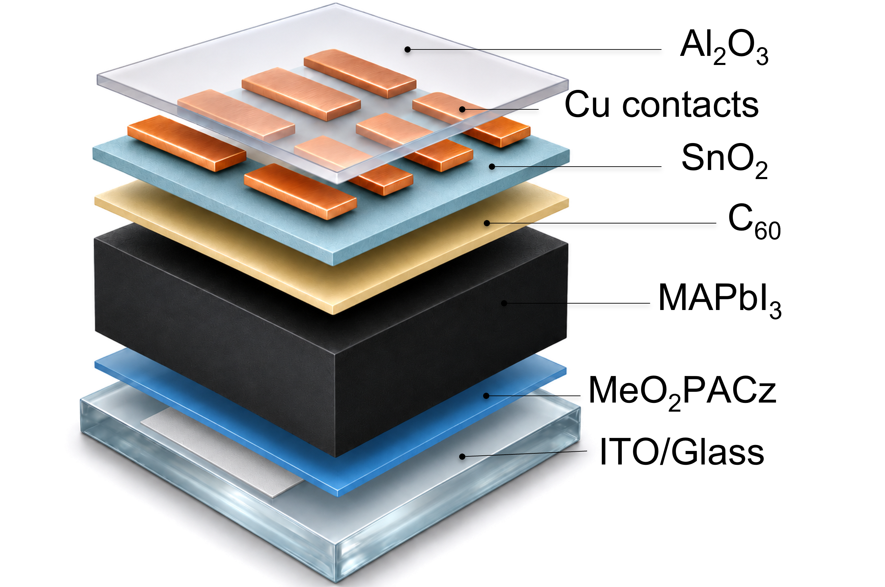

Insights on indoor and outdoor testing of co-evaporated MAPI solar cells
Scan an image on the poster to place its panel beside it. Then move your phone closer to explore the results.
Allow camera and motion access when asked.
Loading the plots…
Use your phone’s rear camera. Move slowly across the poster while tracking starts; once a panel is placed, its recognition image can leave the camera view.
Layout previewCamera off

Printed recognition imageAR plots